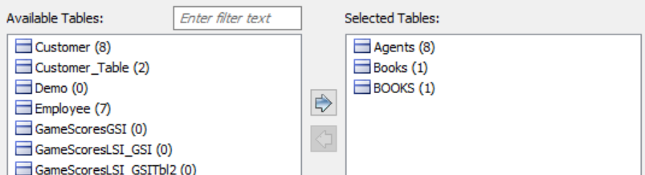

In erwin Data Modeler (DM), click Actions > Reverse Engineer.
The New Model screen appears.
Click Logical/Physical and set Database to DynamoDB.
Click Next.
The Reverse Engineer Process Wizard appears.
Click one of the following options:
-
Database: Use this option to reverse engineer a model from a database.
If you click Database, continue to step 5.
-
<Script Name> Script: Use one of these options to reverse engineer a model from a script. You can either use AWS CLI Script or Python Script option for reverse engineering. Selecting this option enables the File field. Click Browse and select the a script file from your directory.
If you click <Script Name> Script, see step 11 below.
The Connection tab appears.
The following table explains the connection parameters.
Click Connect.
On successful connection, your connection information is displayed under Recent Connections.
Click Next.
The Tables tab appears. It displays a list of available tables.
Under Available Tables, select the tables that you want to reverse engineer. Then, click  .
.
This moves the selected tables under Selected Tables.

Click Next.
The Option Set tab appears. It displays the default option set. You can either use the default or a custom option set.
Click Next.
The Detailed Options tab appears. Set up appropriate options based on your requirement.
Click OK.
The reverse engineering process starts.
Once the process is complete, based on your selections, a schema is generated and a model is created.